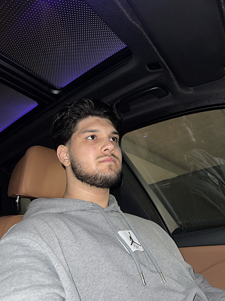

Isahan Gasanov: student of BSU Faculty of Mechanics and Mathematics

Unconventional CV
Favorite books: Allan Piz,Barbara Piz -Body language
Favorite music: "not sad but poetic"xxxmanera
Favourite quote: "In this best of all worlds, all is for the best." - Voltaire
Education:Belarusian State University Faculty of Mechanics and Mathematics
Place of birth: Minsk, Belarus
What I see myself as in the world of Web-technologies:Frontend developer specialising in creating interactive user interfaces
Skills (music, drawing, sports, hobbies, etc.): Boxing, chess, footbal, IT.